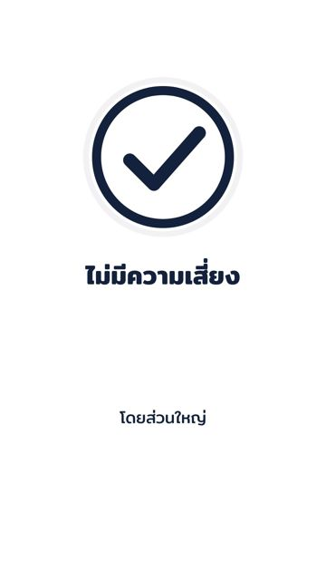
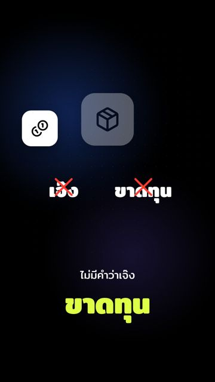
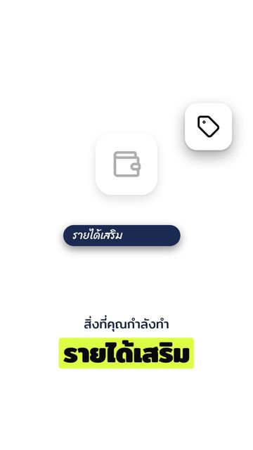
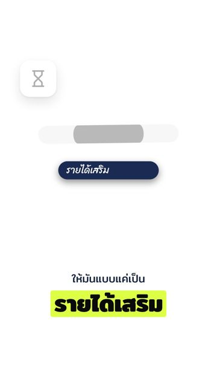

คู่มือ editorial ใหม่: ลองกับคลิปจริง
ผมเขียนคู่มือที่ AI ในระบบจริงอ่านใหม่ ให้ชัดขึ้นแต่ไม่ยาวขึ้น แล้วลองกับคลิปรายได้เสริมของคนที่ Friend เคยส่งมา โดยใช้ AI รุ่นเดียวกับระบบจริง
ผลที่ได้เทียบกับคู่มือเดิม ซึ่งเคยลองกับคลิปเดียวกันด้วยวิธีเดียวกัน
คู่มือสั้นลงผ่านตัวตรวจครบภาพไม่กลับความหมาย
คู่มือใหม่ต่างจากเดิมยังไง
- ให้ทำทีละขั้นตามลำดับ: เลือกประโยค แล้วดูก่อนว่าคนพูดเห็นด้วยหรือกำลังติ จากนั้นค่อยเลือกภาพ
- เปลี่ยนคำกว้าง ๆ เป็นกฎที่ชัด: เช่น คำว่า "ตอนที่" ไม่นับเป็นเรื่องเวลา จึงห้ามใช้ภาพนาฬิกา
- ตัดเรื่องที่โค้ดทำเองออก: คู่มือเลยสั้นลง
| วัดจากไฟล์จริง | คู่มือเดิม | คู่มือใหม่ |
|---|---|---|
| ส่วนวางแผน (ตัวอักษร) | 6,851 | 6,255 |
| ส่วนออกแบบการ์ดเอง (ตัวอักษร) | 6,800 | 6,681 |
คำตอบของ AI รอบนี้ยาวกว่าเดิมราว 4% ผมกะว่าค่า AI ต่อคลิปแทบไม่เปลี่ยน แต่ยังไม่ได้วัดกับระบบจริง เพราะยังไม่มีคีย์
ที่ดีขึ้น
ภาพตรงกับที่คนพูดคิดคนพูดกำลังติว่า รายได้เสริมโดยส่วนใหญ่ ไม่มีความเสี่ยง ไม่มีคำว่าเจ๊ง
(เลยไม่โต)


- รอบสุดท้ายผ่านตัวตรวจครบ ไม่มีการ์ดถูกตัดทิ้ง
- มีการ์ด 15 ใบ ครบตามเกณฑ์ของคลิปยาว 60 วินาที
ที่ยังไม่ดี
การ์ดที่ AI ออกแบบเองบางใบยังวาดภาพเล็กคู่มือบอกขนาดเป็นตัวเลขแล้ว และบอกว่าห้ามวาดของให้เล็กเพื่อสื่อว่า "น้อย" แต่ AI รุ่นในระบบยังทำไม่ได้ทุกใบ


- รอบแรกที่ลอง การ์ดน้อยกว่าเกณฑ์ 1 ใบ และคำบนการ์ดใบหนึ่งล้นขอบจนระบบตัดทิ้ง ผมแก้คู่มือแล้ว รอบสองไม่เกิดอีก
- AI ตอบไม่เหมือนกันทุกครั้ง ผลในหน้านี้มาจากการลองแบบละครั้งเดียว
การ์ดทั้งหมดของคลิปนี้
ภาพนิ่งตอนคำสำคัญของการ์ดทุกใบ เลื่อนดูทางขวาได้บนมือถือ ช่วงหน้าคนพูดไม่ได้ใส่ เพราะคลิปนี้ไม่ได้เก็บไว้ในเครื่อง
คู่มือเดิม (18 การ์ด)

คู่มือใหม่ (15 การ์ด)

ขั้นต่อไปที่ผมเสนอ
- ให้โค้ดขยายภาพของการ์ดที่ AI ออกแบบเองให้เต็มพื้นที่ เพราะเขียนในคู่มืออย่างเดียวไม่พอ แบบเดียวกับจำนวนการ์ดที่โค้ดคุมอยู่แล้ว
- ถ้าอยากดูเป็นคลิปเต็ม ส่งคลิปรายได้เสริมมาในแชทอีกครั้ง เพราะคลิปนี้ไม่ได้เก็บไว้ในเครื่อง
- ทำคู่มือ editorial-overlay ต่อ ด้วยวิธีเดียวกัน
คู่มือใหม่ยังเป็นตัวเลือกทดสอบ ระบบยังใช้คู่มือเดิมจนกว่า Friend จะผ่าน